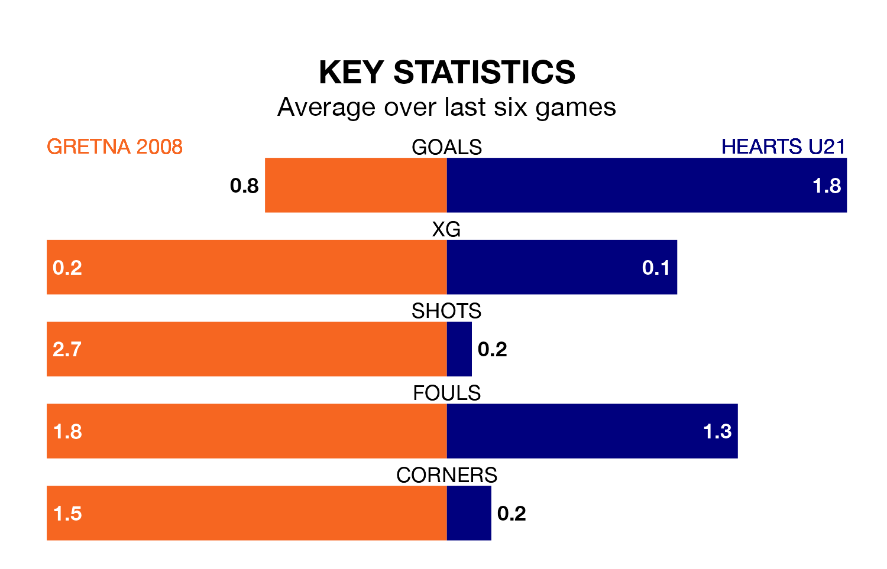

Relegation candidates Gretna 2008 face a challenge against high-flying Hearts U21 at Raydale Park on Saturday.
Gretna 2008 are 17th in the Lowland Football League table, and have picked up just one win and four draws in their 29 games to date.
Hearts, meanwhile, are second in the standings with 60 points, having won 18 and drawn six of their first 30 matches, and are nine points behind table-toppers East Kilbride.
Gretna 2008 are in awful form in the Lowland Football League, with no wins and six losses from their last six games.
With five wins and one loss over that period, Hearts U21's form is much better – they have taken 15 points from 18, compared to the hosts' zero.
With 79 goals in 30 games so far this season, Hearts are the league's second-highest scorers with 2.6 goals per game. And they are conceding fewer than average, letting in 36 goals at a rate of 1.2 per game.
Gretna 2008, meanwhile, are below average scorers, with 0.7 goals per game, compared to a league average of 1.7. They have conceded 3.4 goals per game.
In the last three years, Gretna 2008 and Hearts U21 have played each other on three occasions. Hearts U21 won all of them.
Their last meeting was on July 21, when Hearts U21 won 7-0 at home.
Gretna 2008's last match was on March 9, a 3-0 loss against Berwick Rangers.
Hearts U21 beat Linlithgow Rose 1-0 last time out, on March 16.
Updated: 10:19 (UTC), 22/03/24